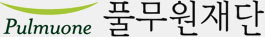

한눈에 보는 풀무원
인간과 자연을 사랑하는 로하스 기업 풀무원을 소개합니다.
ORIGIN
풀무원의 의미와 정신, 그리고 시작을 소개합니다.
‘풀무’란 대장간에서 쇠를 뜨겁게 달구기 위해 바람을 넣는 기구로
원경선 원장은 녹이 슬고 쓸모 없는 잡철이 풀무질로 단단하고 쓸모 있는 유용한 농기구가 되 듯,
인간 풀무질을 통해 사회에 필요한 사람을 만들겠다는 뜻에서 농장의 이름을 풀무원으로 지었습니다.
풀무원식품의 시작
1981년 서울 압구정동에 ‘풀무원농장 무공해 농산물 직판장’ 개설, ‘풀무원유기식품’ 설립
1984년 ‘풀무원식품㈜’ 설립, 두부사업 시작
이웃사랑과 생명존중
원경선 원장으로 부터 영향을 받은 풀무원의 변하지 않는 브랜드 정신은
이웃사랑과 생명존중 입니다.
VALUE
풀무원 구성원이 실천해야 할 가치 및 행동양식을 소개합니다.
-
Trust약속과 규정을
지키는 신뢰성 -
Integrity바른 직무 수행을 위한
직업적 정식성 -
Soildarity회사 목표에 자기 업무를
일치시키는 연대의식 -
Openness늘 열린 마음으로
협력하는 개발성
GLOBAL
풀무원의 바른먹거리는 중국, 일본, 미국을 중심으로 전세계로 뻗어나가고 있습니다.
법인
- China상해 / 북경 / 심천
- Japan사이타마(본사) / 교다 / 교토
- United States
of AmericaFullerton(LA) / Gilroy / Tapan
수출
- United
Kingdom - Germany
- India
- Thailand
- Singapore
- Indonesia
- Mongolia
- Australia
BRAND
풀무원의 주요사업과 브랜드를 소개합니다.
RESPONSIBILITY
인간과 자연을 사랑하는 풀무원의 사회공헌 활동을 소개합니다.

풀무원의 사회공헌 활동과 기업의 사회적 책임(CSR) 활동을
전문적이고 체계적으로 수행하기 위해 설립된 비영리공익법인
바른 먹거리 캠페인
스스로 먹거리를 선택하기 시작하는 초등학생 친구들이
바른 먹거리가 무엇인지를 이해하고, 올바른 제품 선택을 할 수 있도록
바른 먹거리 캠페인 교육 진행
지역사회 나눔
임직원 자원봉사활동, 임직원 가족 자원봉사활동, 사회공헌 봉사단
‘로하스 디자이너’, 이웃사랑 기금, 연말 사회공헌 행사 개최